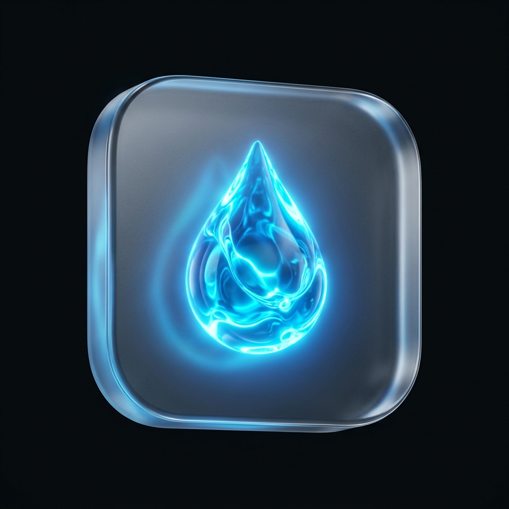
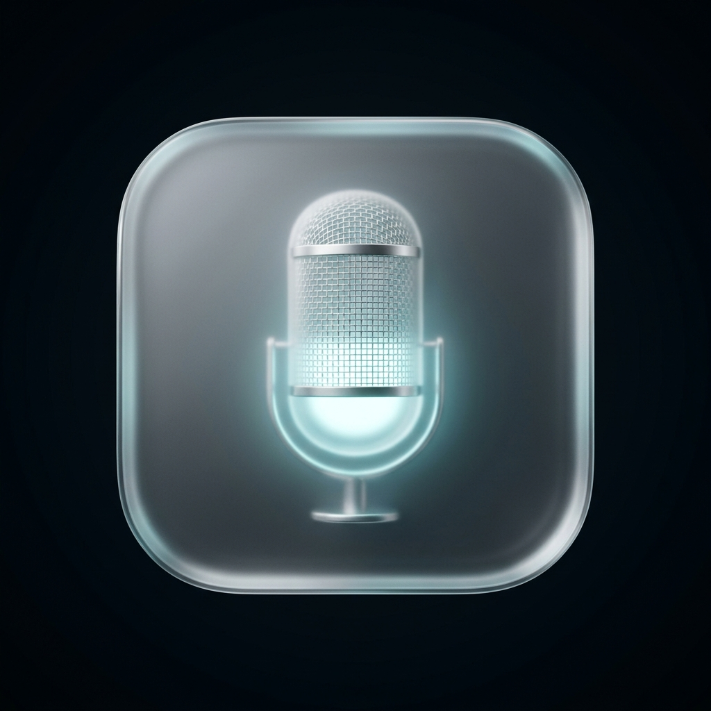
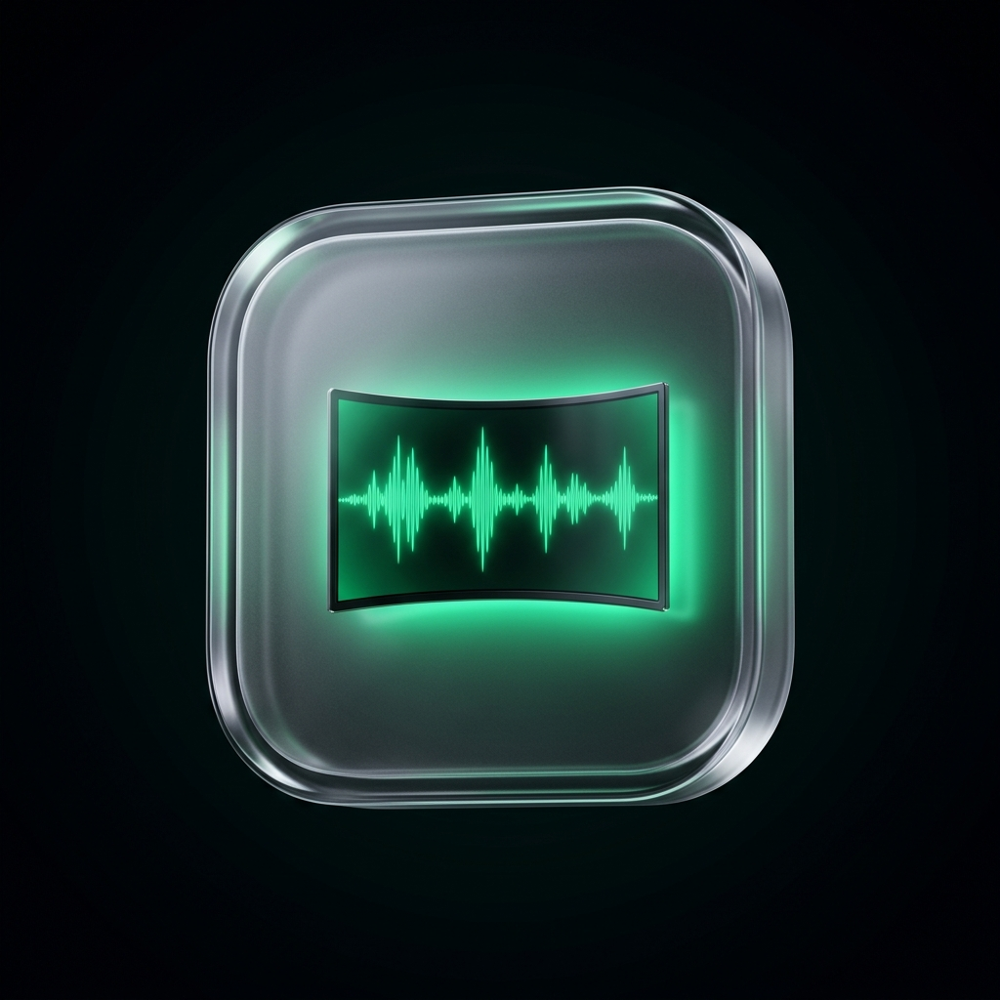
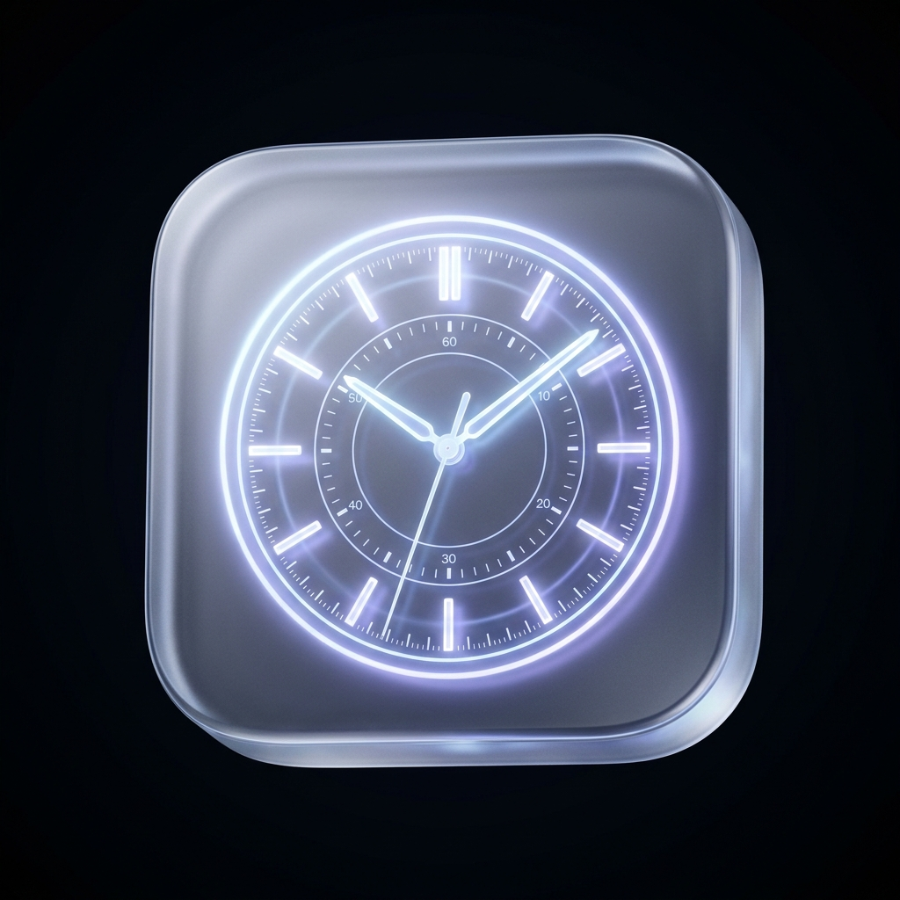

Connecting...
--:--
--°C
System
Offline
Mode
Voice
TTS
AI Key
Telemetry

--

MIC --
OLED --
RTC --Temperature & Humidity Trend: Last 24 Hours
No history data yet.
Data arrives every 5 minutes from ESP32.
Data arrives every 5 minutes from ESP32.
AURA Notepad & Goals
Auto-saved
Pencapaian Target
0%
0 dari 0 target selesai
AURA Multi-API Key Manager
Direct browser AI engine with auto-fallback combo
1. Google Gemini (Primary)
Super cepat & gratis (aistudio.google.com)
2. OpenRouter (Secondary / Fallback)
Multi-model router (openrouter.ai)
3. Custom / OpenAI Direct (Opsional)
Direct OpenAI-compatible API
Failed to reach Firebase or ESP32 not connected.